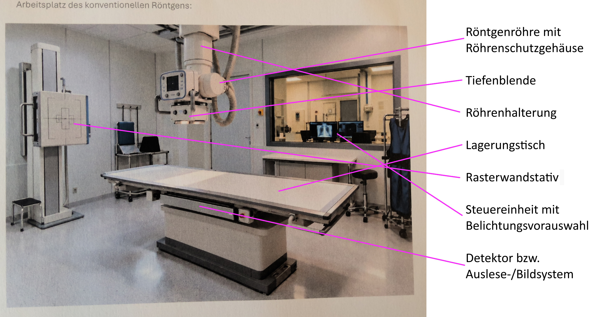

M1.2.1 - Aufgaben und Sicherheit im beruflichen Handlungsfeld als MTR¶
KONTROLLE!
Schriftliche Arbeit am Ende des Moduls!
Handlungsfelder der MTR¶
- Radiologische Diagnostik
- Strahlentherapie
- Nuklearmedizin
- Strahlenphysik
Strahlentherapie¶
- Behandlung von Tumorerkrankungen, aber auch gutartige Erkrankungen
- Einsatz ionisierender Strahlung (Röntgen-, Elektronen- oder Teilchenstrahlung)
- Arbeit an Planungs- und Bestrahlungsgeräten
- Intensivere Betreuung der Patient-/innen über längere Zeit
Nuklearmedizin¶
- Einsatz radioaktiver Arzneimittel
- Darstellung von Organfunktionen und Stoffwechselveränderungen
- Vorbereitung und Durchführung nuklearmedizinischer Untersuchungen
- besonders Fokus auf Strahlenschutz
Strahlenphysik, Dosimetrie und Strahlenschutz¶
- Strahlenschutz für Patienten und Personal
- Dosismessung und Qualitätskontrollen
- Überprüfung von Geräten und Strahlenschutzmitteln
- Zusammenarbeit mit Medizinphysikern
1. Radiologische Diagnostik und andere bildgebende Verfahren¶
1.1 Allgemein¶
- Darstellung von Knochen, Organen und Gefäßen
- Einsatz z.B. von Röntgen, CT, MRT, ...
- MTRs führen Untersuchungen auf ärztlicher Anordnung durch
- Bedienung der Geräte und Kontrolle der Bildqualität
1.1.1. Radiologische Diagnostik und andere bildgebende Verfahren¶
Indikatoren:
- Frakturverdacht
- Luxation/Dislokation
- Entzündungsdiagnostik, z.B. Lungenentzündung (Pneumonie)
- Degenerative Erkrankungen an Gelenken oder Wirbelsäule
Aufgaben MTR¶
Information
Die folgenden Schritte sind nicht festgeschrieben und können je nach persönlichem Arbeitsablauf variieren. Es existiert allerdings eine logische Reihenfolge für einige der Schritte.
Vorbereitung
- Arbeitsplatz vorbereiten (desinfizieren)
- Strahlenschutzmittel bereit legen
- Lagerungshilfsmittel bereit legen
- Röntgengerät betriebsbereit machen
- Name und Geburtsdatum abgleichen, um Person zweifelsfrei zu identifizieren
- Prüfen der betreffenden Körperregion und Indikation
- ggf. Frühere Aufnahmen prüfen
- Röntgengerät positionieren
- Patient darüber informieren, was entkleidet oder entfernt werden soll
- Erkundigen ob Patient bei Umziehen oder Lagerung Hilfe benötigt
Durchführung
- Patient über Ablauf und Durchführung informieren
- Körperteil für die Aufnahme positionieren ggf. Lagerungshilfsmittel benutzen
- Strahlenschutz beachten
- Detektor und Röntgenröhre auf Aufnahme anpassen
- Patient ggf. beruhigen und Fragen beantworten
- Einblendung des Untersuchungsgebietes
- Abstand zwischen Röhre und Detektor überprüfen
- endgültige Überprüfung der Aufnahmesituation und ggf. Bleibuchstabe legen (auch in digitaler Nachbearbeitung möglich, je nach Einrichtung)
- Patient bitten, in Position zu bleiben und sich nicht zu bewegen
- Aufnahme auslösen, ggf. Umlagern für 2. Ebene und zurück zu Schritt 4
Nachbereitung
- Kontrolle der Bildqualität und ggf. Wiederholungsaufnahme anfertigen
- Beschriftung hinzufügen, z.B. Besonderheiten wie Bettaufnahme oder erschwerte Lagerung
- Dokumentation / Quittierung der Untersuchung (MTR, Arzt usw. eintragen)
- Übertragung der Aufnahmen an das PACS senden, ggf. CD brennen
- Arbeitsplatz für nächste Untersuchung vorbereiten und desinfizieren
- Rücktransport bei stationären Patienten organisieren
- Überprüfen, dass der Patient alle Unterlagen wieder mitnimmt (ggf. seine Habseligkeiten)
Sicherheitsmaßnahmen¶
Hygiene
- Schutzkleidung und Mund-Nasen-Schutz und Handschuhe bez. infektiöser Patienten tragen
- Lagerungshilfsmittel und Kontaktflächen desinfizieren
- Händedesinfektion
Strahlenschutz
- Einblendung auf die Untersuchungsregion, um Exposition zu reduzieren
- alle unbeteiligten Personen verlassen den Untersuchungsraum während der Aufnahme mittels ionisierender Strahlung
- Schutzausrüstung wie Bleiweste tragen, wenn doch im Raum gearbeitet werden muss, während die Untersuchung stattfindet
- alle Strahlenschutztüren schließen
1.2 Verfahren¶
- konventionelles Röntgen
- Mobile Röntgengeräte
- Sonografie
- Mammografie
- Durchleuchtung
- Angiographie
- Computertomografie
- Magnetresonanztomografie
- OPG (Orthopantomographie)
- Knochendichtemessung
Info
-
nicht jede Klinik oder Praxis verfügt über alle Verfahren
-
große Kliniken: mehrere Modalitäten und zusätzliche Bereiche, wie z.B. Angiografie
-
kleinere Praxen: oft Spezialisierung auf bestimmte Verfahren
1.2.1. konventionelles Röntgen¶
- grundlegendes Verfahren der radiologischen Diagnostik
- Erstellung zweidimensionaler Aufnahmen des Körpers mit Röntgenstrahlungen
Arbeitsplatz
- Röntgenröhre mit Röhrenschutzgehäuse
- Tiefenblende
- Röhrenhalterung
- Lagerungstisch
- Rasterwandstativ
- Steuereinheit mit Belichtungsvorauswahl
- Detektor bzw. Auslese-/Bildsystem

1.2.2. Mobile Röntgengeräte¶

- sind transportable Röntgengeräte
- wird direkt zum Patienten gebracht
- typischer Einsatzort: ITS
- häufige Untersuchung: Thorax-Bettaufnahme
typische Indikationen
- Thorax-Aufnahme bei beatmeten Patient/innen
- Lagekontrolle von Kathetern, Sonden oder Tuben
- Verlaufskontrolle bei nicht transportfähigen Patient/innen
- ggf. Aufnahme nach OP oder bei akuten Verletzungen
**Besonderheiten im Vergleich zum konventionellen Röntgen
- Untersuchung findet nicht im Röntgenraum statt
- erschwerte Aufnahmebedingungen
- Strahlenschutz im offenen Raum besonders beachten
- Bildqualität kann eingeschränkt sein
1.2.3. Mammografie¶
- Darstellung des Brustdrüsengewebes mittels Röntgenstrahlung
- Aufnahme beider Seiten in 2 Ebenen (CC, MLO)
- es wird mit weicher Röntgenstrahlung gearbeitet (ca. 25-35 kV)
- Kompression der Brust ist wichtig für Bildqualität und Strahlenbelastung https://youtu.be/gSdsAeRwtjE

1.2.4. Sonographie¶
- Bildgebendes Verfahren mit Ultraschallwellen
- keine ionisierende Strahlung
- besonders geeignet für Weichteile und oberflächliche Strukturen (Schilddrüse, Lymphknoten, Abdomen)
- schlechte Beurteilbarkeit von Knochen
Schallkopftypen
- Konvexschallkopf: eher für tiefere Strukture, z.B. im Abdomen
- Linearschallkopf: für oberflächliche Strukturen, z.B. Schilddrüse
- Sektorschallkopf: kleines Schallfenster, z.B. für Herzuntersuchungen


1.2.5. Durchleuchtung¶
- Röntgenverfahren mit kontinuierlicher bzw. gepulster Bildgebung in Echtzeit
- Ermöglicht die Beobachtung von Bewegungsabläufen und Kontrastmittelpassagen
- Einsatz während funktioneller Untersuchungen oder Interventionen
- Indikationen: Darstellung von Schluckvorgängen, Magen-Darm-Untersuchungen, Gelenkdarstellungen, ...

1.2.6. Angiographie¶
- Darstellung von Blutgefäßen mittels Röntgenstrahlung und Kontrastmittel
- Gefäße werden über einen Katheter dargestellt
- Verbindung von Diagnostik und Therapie
- Indikationen: Gefäßverengung oder -verschlüsse, Blutungen, Aneurysmen, ...
Besonderheiten
- Strahlenschutz für Patient und Personal besonders wichtig → längere Durchleuchtungszeiten möglich
- Sterile Arbeitsweise notwendig
- engmaschige Patientenbeobachtung und -überwachung
1.2.7. Computertomographie¶
- Schnittbildverfahren mit Röntgenstrahlung
- Röntgenröhre und Detektoren rotieren um den Patienten
- verschiedene Körpergewebe lassen unterschiedlich viele Strahlen hindurch
- Entstehung von Schnittbildern des Patienten
- aus Rohdaten können weitere Organfenster und Bilder rekonstruiert werden

1.2.8. Magnetresonanztomografie (MRT)¶
- Schnittbildverfahren ohne Röntgenstrahlung
- basiert auf starken Magnetfeldern und Hochfrequenzimpulsen
- nutzt die Eigenschaften von Wasserstoffprotonen im Körper
- besonders gute Darstellung von Weichteilen

Sicherheitsmaßnahmen
- Starkes Magnetfeld - auch wenn keine Untersuchung läuft
- Magnetische Gegenstände können angezogen werden → Projektilgefahr
- Metallgegenstände vor Betreten des Untersuchungsraumes ablegen
- Herzschrittmacher oder Implantate → meistens kontraindiziert bzw. nicht MRT-tauglich
- Rollstühle, Sauerstoffflaschen etc. nicht in den MRT-Raum
1.2.9. Orthopantomografie (OPG)¶
- Panoramaschichtaufnahme des Ober- und Unterkiefers
- Darstellung von Zähnen, Kieferknochen, Kiefergelenk, angrenzenden Strukturen z.B. Kieferhöhlen
- Röntgenröhre und Detektor bewegen sich während der Aufnahme um den Kopf
- Indikation: Übersicht über Zahn- und Kieferstatus, Verlaufskontrolle des Zahnwechsels, vor Zahnextraktion, Entzündungen, Tumorverdacht
1.2.10. Knochendichtemessung¶
- Bestimmung der Knochenmineraldichte mittels Röntgenstrahlen
- aus der Abschwächung der Strahlung wird Knochendichte ermittelt
- typische Messregion: Lendenwirbelsäule oder Hüfte
- Indikationen: Verdacht auf Osteoporose, Abschätzung des Frakturrisikos, Verlaufskontrolle bei bekannter Osteoporose
2. Strahlentherapie¶
- Synonym: Radioonkologie oder Radiotherapie
- Behandlung gutartiger und vor allem bösartiger Erkrankungen mit ionisierender Strahlung
- ca. 400.000 Krebsneuerkrankungen pro Jahr in Deutschland
- Ziel: Tumorgewebe bzw. krankhaft verändertes Gewebe möglichst gezielt zu behandeln → Schonung von gesundem Gewebe
- Interprofessionelle Zusammenarbeit zwischen Ärzt/innen, MTR und Medizinphysik
2.1. Ablauf einer Strahlentherapie¶
- Erstvorstellung & Sprechstunde
- Lokalisation
- Bestrahlungsplanung & Bestrahlungsrechnung
- Ersteinstellung am Gerät
- Bestrahlungsphase
- Nachsorge
2.1.1. Erstvorstellung und Sprechstunde¶
- Besprechung der Erkrankung mit dem Arzt
- vorhandene Befunde (Laborbefund, OP-Berichte, bildgebende Diagnostik) entgegen nehmen
- ausführliches Aufklärungsgespräch (Ablauf, Therapieziel, Nebenwirkungen, Prophylaxe)
- ärztliche Untersuchung durchführen
- Aufklärungsbogen dem Patienten aushändigen (mind. 48h vor Lokalisation)
- Termin für Lokalisation
2.1.2. Lokalisation¶
- Aufklärungsbogen des Patienten wieder entgegen nehmen, unterschriebene Einwilligung entgegen nehmen
- Patientenidentifikation durchführen
- Durchführung eines Planungs-CTs (Grundlage für anschließende Bestrahlungsplanung!)
- Patientenlagerung planen
- geeignete Lagerungshilfsmittel aussuchen und verwenden
- anfertigen von Hilfsmitteln → z.B. Thermoplastmaske
- Konturierung / Einzeichnung von Risikoorganen
2.1.3 Bestrahlungsplanung / Bestrahlungsberechnung¶
- Festlegung der Gesamtdosis
- → Fraktionierung = Aufteilung der Gesamtdosis in Einzeldosen
- Erstellung durch Medizinphysiker und Radioonkologen
- Festlegung des Zielgebietes
- → Schonung von Risikoorganen
- Festlegung der Bestrahlungstechnik und Bildgebung
2.1.4 Ersteinstellung am Gerät¶
- Positionierung des Patienten entsprechend des Planungs-CTs (mit allen Lagerungshilfsmitteln)
- Patient über den Ablauf informieren und Fragen beantworten
- Voraussetzungen klären, z.B. volle Harnblase, leerer Darm (Prostatabestrahlung)
- Durchführung der 1. Bestrahlung → Bildgebung, Freigabe durch Arzt
- weitere Termine für nächsten Bestrahlungen
2.1.5 Bestrahlungsphase¶
- Beobachtung des Patienten (Allgemeinzustand, Nebenwirkungen)
- Patient nimmt Zwischenvorstellungen beim Arzt wahr (in der Abteilung), z.B. 1x wöchentlich
- erfolgt über mehrere Wochen (ca. 4-6 Wochen Dauer)
- regelmäßige Bildgebung
2.1.6 Nachsorge¶
- Abschlussgespräch am letzten Bestrahlungstag
- Kontrolle des Behandlungserfolges durch Bildgebung (Röntgen, CT)
- in regelmäßigen Abständen Wiedervorstellung in Abteilung (Strahlennachschau)
2.1.7 Geräte der Strahlentherapie¶
- Linearbeschleuniger
- Röntgentherapie-Geräte
- Afterloading-Geräte
- Gamma-Knife
- Kreisbeschleuniger
Linearbeschleuniger¶
- Beschleunigung geladener Teilchen auf einer geraden Strecke
- Erzeugung hochenergetischer Strahlung für die externe Strahlentherapie
- Bestrahlung erfolgt von außen auf das Zielgebiet
- Unterschiedliche Einstrahlrichtungen sind möglich
Typische Anwendungen:
- Bösartige Tumorerkrankungen: Mamma-Ca, Prostata-Ca, Kopf-Hals-Tumoren, Hirnmetastasen, ...
- Gutartige Erkrankungen: Fersensporn, Arthrose, Gynäkomastie, ...
Röntgentherapie-Geräte / Orthovolttherapie¶
- Behandlung mit Röntgenstrahlung
- im Vgl. zum Linearbeschleuniger geringere Strahlendosis
- dadurch v.A. für Oberfläche bzw. relativ oberflächennahe Zielgebiete
- Ziel: entzündungshemmende und schmerzlindernde Wirkung → keine zerstörende Wirkung
- Hauttumoren (gut- oder bösartig)
- Fersensporn, Schleimbeutelentzündung, Tennisarm
Afterloading / Brachytherapie¶
- Bestrahlung von innen
- Radioaktive Quelle wird nah oder direkt in das Zielgebiet gebracht
- erfolgt über Applikator bzw. Kathete, der ferngesteuert die Bestrahlungsquelle vorschiebt
- Durchführung teilweise unter Narkose notwendig
- Vorteil: hohe lokale Strahlendosis bei Schonung des gesunden Gewebe → geringe Nebenwirkungen
- typische Anwendungsgebiete: gynäkologische Tumore (Zervix-Ca), Prostata-Ca, Ösophagus-Ca
Arten der Brachytherapie
- Intrakavitär: Strahlenquelle wird in natürliche Körperhöhle gebracht, z.B. bei Zervix-Ca
- Interstitiell: Strahlenquelle wird direkt in das Tumorgebiet eingebracht, z.B. bei Prostata-Ca
- Intraluminal: Strahlenquelle wird in ein Hohlorgan eingebracht, z.B. Ösophagus-Ca
- Kontrakt-/Oberflächenbrachytherapie: Strahlenquelle liegt direkt an Körperoberfläche
Gamma-Knife
- spezielle Form der stereotaktischen Strahlentherapie
- Einsatz v.a. bei kleinen, klar abgrenzbaren Veränderungen im Gehirn
- viele einzelne Strahlenbündel treffen sich sehr präzise im Zielgebiet
- sehr genaue Lagerung und Fixierung des Kopfes notwendig
- Behandlung erfolgt in einer oder wenigen Sitzungen

Kreisbeschleuniger / Teilchentherapie
- Teilchen werden in einem kreisförmigen Beschleuniger auf hohe Energie gebracht
- z.B. Protonen, Schwerionen
- Besonderheit: Energie kann gezielt in einer bestimmten Tiefe abgegeben werden → dadurch bessere Schonung des umliegenden Gewebes (Bragg-Peak)
- typische Einsatzgebiete: kindliche Tumoren, Schädelbasis- und ausgewählte Hirntumoren, Tumoren nahe strahlempfindlicher Organe (Rückenmark, Augen)
Strahlenschutz des Patienten
- Bestrahlung nur nach rechtfertigender Indikation
- ausreichende und homogene Dosis am Tumor nach Bestrahlungsplan
- individuell angepasste Lagerung
- Abwägung anderer Alternativen
- spezielle Hilfsmittel wie: Lochbrett in Bauchlage, Hodenkapseln
- Feldkontrollaufnahme zur Kontrolle der Lagerung nur im Bedarfsfall täglich, wegen zusätzlicher Strahlenbelastung
Strahlenschutzbereiche
- Überwachungsbereich - Wartebereiche, Flure der Abteilung, Bereiche um die Beschleunigungsbunker (<1 mSv pro Jahr oder Organdosis von <15 mSv auf Augenlinse oder von <50 mSv auf die Haut
- Kontrollbereich - Beschleunigungsbunker, ist gekennzeichnet mit "KONTROLLBEREICH", nur explizit erlaubter Personenkreis, zusätzliche Unterweisung erforderlich, Schwangere nur mit Zustimmung des Strahlenschutzverantwortlichen. Werte: <6, <45, <50 mSv s.o.
- Sperrbereich - Umwandlung des Kontrollbereiches, sobald Strahlung aktiv, Warnschild nun: "SPERRBEREICH - KEIN ZUTRITT", Schwangere verboten, außer wenn selbst Patient. Bestrahlungsraum der Brachytherapie bei ausgefahrener Strahlungsquelle oder Beschleunigungsbunker. Spezielle Unterweisung für Bergung aus diesen Räumen, >3 mSv/h
Personendosimetrie
- vorgeschrieben für Personal mit Exposition
- monatliche Auswertung
- Angehörige und Besucher: Auch Überwachungsmaßnahmen
- Bsucher: Aufenthaltsdauer und Körperdosis dokumentieren
Definition Körperdosis
Körperdosis beschreibt die Strahlendosis, die eine Person tatsächlich erhält bzw. die am Körper erfasst wird
Definition Ortsdosisleistung
Ortsdosisleistung beschreibt, wie hoch die Strahlenexposition an einem bestimmten Ort pro Zeit ist
Bauliche Maßnahmen
- So, dass Personal keine Dosis abbekommt
- Barytbeton (Bariumsulfat) mit 1 - 2m Dicke
- Strahlenfang ("Labyrinth") als Eingang
- Strahlenschutztür bis 3cm Blei und 30cm Paraffin
- wenn kein Labyrinth, dann Strahlenschutztor aus Barytbeton
- Lüftungssystem, um Isotope von Stickstoff und Sauerstoff abzuführen (10x pro Stunde Austausch)
Notfallbergung
- Notfallkonzept, wenn die Maßnahmen versagen oder die Strahler sich nicht deaktivieren lassen
- Tor hat Notfallüberbrückung der Verriegelung (mindestens per Feuerwehr zu öffnen)
- Notfallbergung müssen trainiert werden: mit explizitem Ablauf
- Patient im Notfall beruhigen und sofort zuständige Personen informieren
Nuklearmedizin¶
- Einsatz von radioaktiven Arzneimitteln = Radiopharmaka
- Radiopharmaka verteilen bzw. reichern sich gezielt in bestimmten Organen oder Gewebe an
- ausgesandte Strahlung wird von außen über Gammakamera gemessen
- Beurteilung von Funktion und Stoffwechsel von Organen
- Nuklearmedizin umfasst Diagnose und Therapie
Radiopharmaka:
- besteht aus: Radionuklid und einem Tracer bzw. Trägermolekül (Tracer)
- Radionuklid = radioaktive Bestandteil, sendet die messbare bzw. therapeutisch wirksame Strahlung aus
- Tracer = beeinflusst, wo sich das Radiopharmakon im Körper verteilt oder anreichert
- je nach Untersuchung werden unterschiedliche Radionuklide und Tracer verwendet:
- Tc-99m = Radionuklid, MAG3 = Trägermolekül
- Tc-99m-MAG3 = Radiopharmakon

Ort und Lage einer nuklearmedizinischen Abteilung:
- häufig eher dezentral im Krankenhaus gelegen
- teilweise ebenerdige Lage
- Gründe dafür:
- hohes Eigengewicht einiger Geräte
- besondere Anforderungen an den Strahlenschutz
- abgeschirmte bzw. entsprechend ausgeführte Wände und Türen
- Bleiverglasung in bestimmten Bereichen
Aufbau / Räume einer nuklearmedizinischen Abteilung
- Anmeldung / Sprechzimmer
- Nicht aktive Wartebereiche ("nicht radioaktiv"): für Patienten vor der Applikation eines Radiopharmakons
- Applikationsbereich: dort wird das Radiopharmakon verabreicht
- Aktive Warte- bzw. Ruheräume: für Patienten nach der Applikation
- Untersuchungsräume: z.B. Gammakamera, SPECT/CT, PET/CT
- Aktiv-/Heißlabor: Umgang bzw. Vorbereitung radioaktiver Stoffe
Bildgebende Verfahren und Geräte:
1. Gammakamera¶
- Nachweis der vom Radiopharmakon ausgesandten Gammastrahlung
- Strahlung kommt aus dem Körper des Patienten
- Darstellung der Verteilung des Radiopharmakons
- dadurch Beurteilung von Organfunktion und Stoffwechsel
- z.B. bei Schilddrüsen-, Nieren-, Knochen-, Myokardszintigrafien
Wichtige Bestandteile:
- Kollimator: lässt nur Gammaquanten aus bestimmten Richtungen durch
- Szintillationskristall: wandelt Gammastrahlung in Lichtblitze um
- Photomultiplier: verstärkt die Lichtsignale
- Eletronik: verarbeitet die Signale
- Computer: erzeugt daraus das Bild (Szintigramm)
Beispiel für Gammakamera:
- Syngula
- feststehende Einkopfkamera
- vor allem für Schilddrüsenszintigrafie
- je nach Kollimator z.B. für Tc-99m oder I-131
2. SPECT / SPECT-CT¶
- SPECT = Single Photon Emission Computed Tomography
- arbeitet mit einer Gammakamera
- Detektoren rotieren um den Patienten
- Aufnahmen aus vielen verschiedenen Richtungen
- Entstehung dreidimensionaler Schnittbilder
- CT als Ergänzung für anatomische Zuordnung
Beispiel für SPECT-Systeme:
- E-CAM
- hat kein integriertes CT
- ermöglicht Ganzkörperaufnahmen und SPECT-Aufnahmen
- Einsatz je nach Untersuchung z.B. bei Nieren-, Knochen-, oder anderen szintigrafischen Fragestellungen
SPECT-CT:
- Symbia 1, Symbia 2, je nach Untersuchungsschwerpunkt
3. PET / PET-CT¶
- PET = Positronen-Emissions-Tomografie
- Verwendung von positronen-strahlenden Radiopharmaka
- Positron trifft auf ein Elektron → es kommt zur Annihilation (Vernichtung)
- Es entstehen zwei Photonen mit je 511 keV → werden nahezu entgegengesetzt ausgesendet
- Detektoren registrieren beide Photonen gleichzeitig
-
daraus erfolgt die Rekonstruktion von der Verteilung des Radiopharmakons
-
CT liefert anatomische Zuordnung
Einsatzgebiete:
-
vor allem Onkologie
- Tumorsuche und Staging (Metastasensuche)
- Rezidivdiagnostik
-
Messung für in vivo Diagnostik
- Szintillationsdetektor
- Up-Take-Messung zu unterschiedlichen Zeitpunkten (wieviel Radiopharmakon wurde aufgenommen?)
- Er wird insbesondere bei der Planung einer Radioiodtherapie verwendet
- allgemeiner Strahlenschutz bei offenen radioaktiven Stoffen (4-A Regelung), leichte Reinigung des Messplatzes (Kinnstütze und Abstandshalter) mit Kontakt zu Patienten, für das Gerät gibt es spezielle Bleiabschirmung im Gerät, um den Szintillationskristall zu schützen